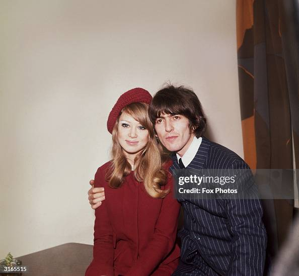
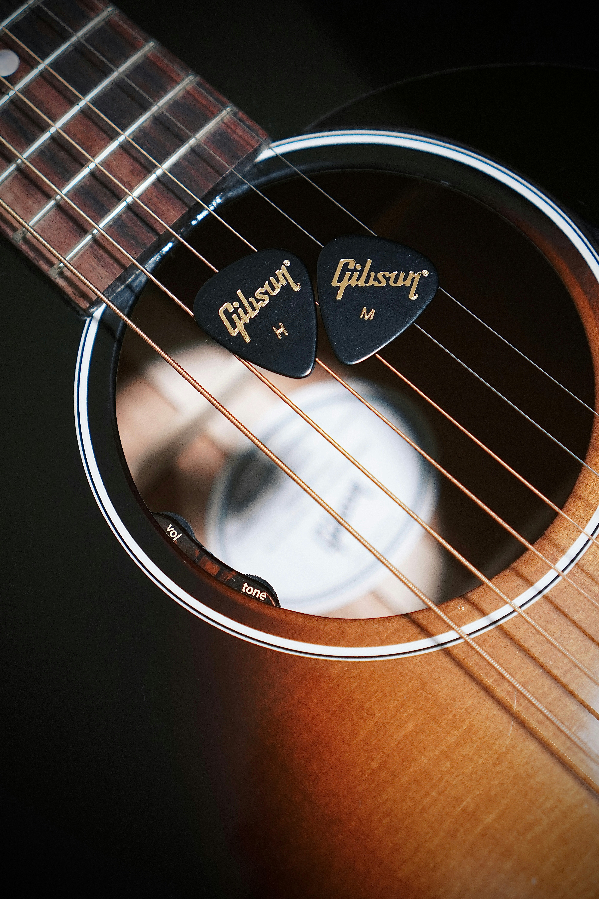

Love Triangle: How it Started
When you think of George Harrison, you think of the Beatles. And while the Beatles were a huge part of his career, they definitely weren't the most entertaining. Each band member had their own problem, of course. Ringo abused his wife, Paul had his wife go to jail for him, and Lennon... well, was Lennon, he's disliked for a reason. Unfortunately for you, dear reader, my favorite story to tell about the bands I listen to has never been their discography, their clothes, or their impact. I like George Harrison for the same reason I enjoy Fleetwood Mac: The Rumors.
Pattie Boyd: Most Accomplished Groupie
Pattie Boyd is to this day known as the most achieved groupie. She married and divorced not one, not two, but three rockstars who she fangirled over before meeting. While these relationships were not glamorous and left her in a lot of terrible situations, there is a level of comedic disbeleif to her relationship with Georghe Harrison. I will admit, some details may be skewed because this story is told by word of mouth. Biut what's a little friendly gossip?
So, the story: It all starts after they finally get married and George writes a song for her that is so loved, everyone believes these two must be soulmates. In enters, Eric Clapton of Derrick and the Dominoes.
- George Harrison Meets Pattie Boyd
- They Get Married
- George Cheats on Pattie with Ringo's Wife
- Encourages her to Cheat too

